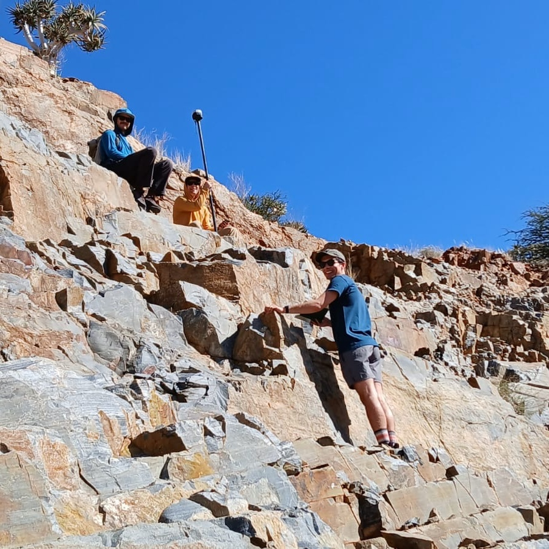

Field Photos

Namibia (July 2026)
Field trip during ICAR 2026 to the Gobabeb Research Station in the Namib Desert, Namibia.

Namibia (October 2025)
Dragonfly field excursion to the Namib Sand Sea, Namibia.

West Bar (September 2025)
Field measurements of bedforms associated with glacial outbursts in the Channeled Scablands of Washington, USA.

South Africa (June 2025)
Characterization of the oldest known aeolian dune deposits near Prieska, South Africa.

Sardinia, Italy (May 2025)
Field excursion during the International Planetary Dunes Conference in Sardinia, Italy.

Death Valley (March 2025)
Planetary Surface Processes Spring Break Field Trip to Death Valley, USA.

South Africa (July 2024)
Field excursion to some of the best-preserved Precambrian strata in the Barberton Greenstone Belt and near Prieska, South Africa.

Dixie Valley (May 2024)
Topographic survey of an unvegetated meandering river in Nevada, USA.
[Photo
Grand Staircase–Escalante
September 2023]
Grand Staircase–Escalante (September 2023)
Sampling of well-characterized sedimentary rocks to validate automated identification of depositional environments from sand surface textures in Utah, USA.
[Photo
White Sands
May 2023]
White Sands (May 2023)
Field excursion to White Sands National Park for the International Conference on Aeolian Research in New Mexico, USA.

Mississippi River (March 2023)
Sediment collection along the length of the Mississippi River, from the delta in Louisiana to the headwaters at Lake Itasca in Minnesota, USA.
[Photo
California Volcanism
October 2022]
California Volcanism (October 2022)
Field trip to Lassen Volcanic National Park and Clear Lake regions of Northern California, USA for 'Eruptive and Magmatic Processes'.
[Photo
Great Sand Dunes
May 2022]
Great Sand Dunes (May 2022)
Field excursion to Great Sand Dunes National Park for the International Planetary Dunes Conference in Colorado, USA.
[Photo
Dixie Valley
April 2022]
Dixie Valley (April 2022)
Stratigraphic and topographic characterization of an unvegetated meandering river in Nevada, USA.